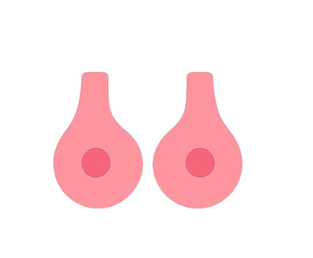

Chega a adolescência e o corpo começa a se transformar rapidinho. Isso por conta dos hormônios que preparam o corpo pra virar adulto.

O que acontece nessa fase:
Seios crescendo: Primeiro sinal pra muita gente. Podem ficar doloridos ou crescerem de um lado antes do outro.
Pelos novos: Começam a aparecer na região íntima, nas axilas e até nas pernas.
Menstruação (a famosa “menarca”): Pode chegar entre 9 e 15 anos. Nos primeiros ciclos é normal ser toda bagunçada, não precisa se desesperar.
Quadris ganhando forma: Ficam mais largos, o corpo armazena um pouquinho mais de gordura nessa região.
Pele e cabelo mais oleosos: Cravos e espinhas podem surgir. Por isso é tão comum vermos jovens com espinhas. Tudo em nós está um pouquinho oleoso demais.
Por que fico tão sensível, irritada ou chorona do nada?
Humor montanha-russa: Sensibilidade à flor da pele, choros do nada ou irritação. Normal! É o cérebro se ajustando aos hormônios. Muitas vezes não entendemos nós mesmos, não é? Quem nunca foi chamada de chata nessa fase? Não ligue para isso, possivelmente são só seus hormônios lhe deixando em uma montanha-russa de sentimentos.
Cada corpo tem seu tempo. Comparar só traz insegurança. Vai acontecer tudo na hora certa pra você!